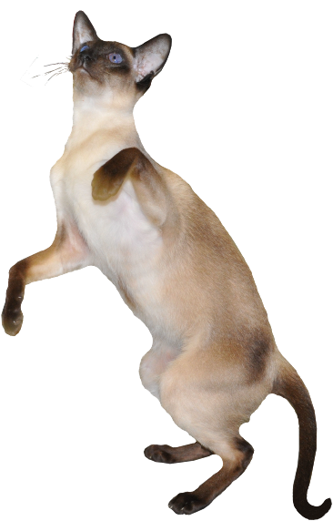

Siāmas kaķis jeb siāmietis pārstāv vienu no vispazīstamākajām Austrumu jeb Orientālo kaķu šķirnēm un tā ir pirmā pasaulē atzītā Orientālā šķirne.
Tradicionālais siāmietis ir samērā masīvs, muskuļots un liels kaķis ar apaļu galvu un ķīļveida purniņu. Ausis vidēji lielas, novietotas augstāk nekā modernajam siāmietim. Spilgti zilās acis vidēji lielas, mandeļu formas, kuras nereti šķielē.
Modernais siāmietis ir slaids, elegantām, smalkām ķermeņa līnijām, elastīgs un muskuļots. Siāmas kaķis sver daudz vairāk nekā varētu šķist. Galvai ir trīsstūrveida forma ar šauru, garu purnu. Profīlam jābūt taisnam, bez izliekumiem vai pārrāvumiem. Zods zemu novietots un spēcīgs.
Siāmas kaķim piemīt augsta inteliģence un bezbailīgs raksturs, tas ir draudzīgs un ziņkārīgs. Tam patīk cilvēka klātbūtne un atrasties uzmanības centrā. Lai arī siāmietis draudzējas ar visu ģimeni, tas tāpat kā suns izvēlēsies par saimnieku vienu cilvēku.